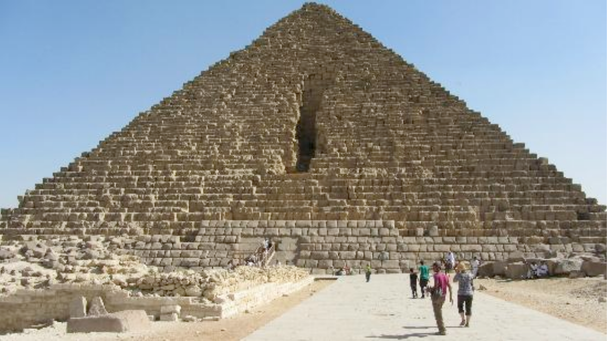
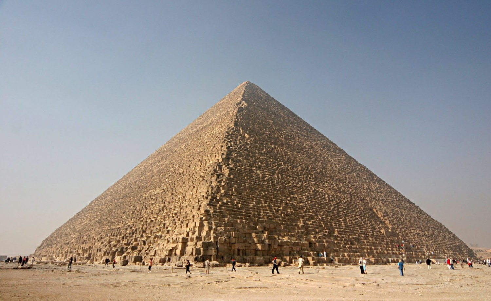
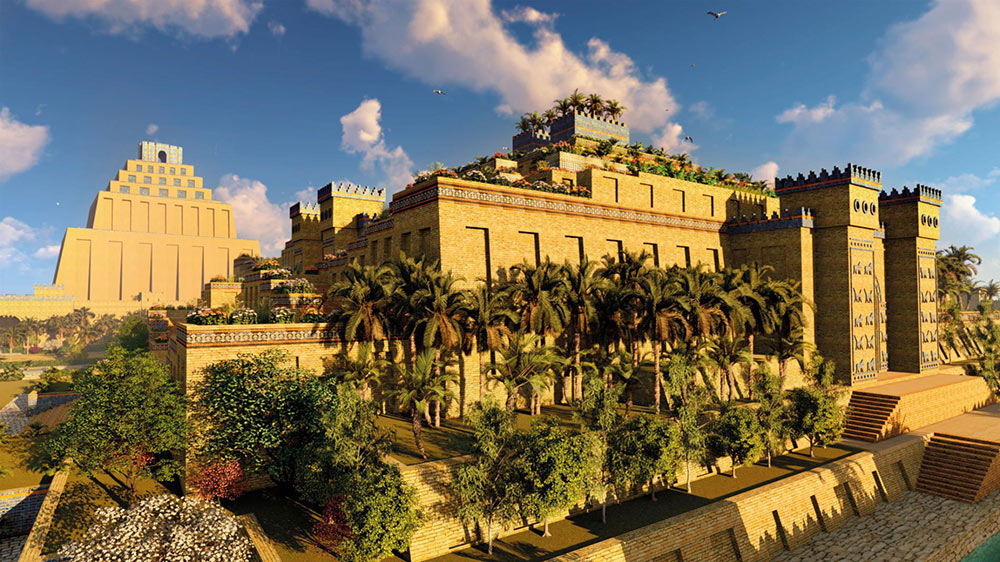
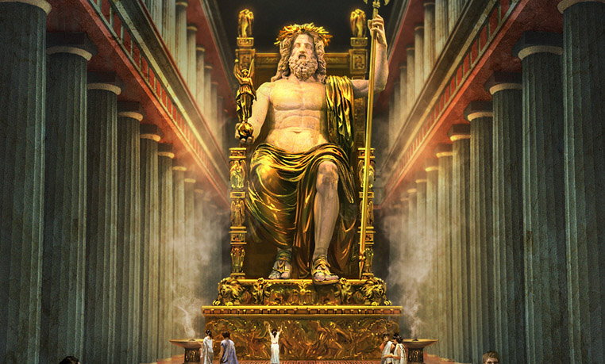
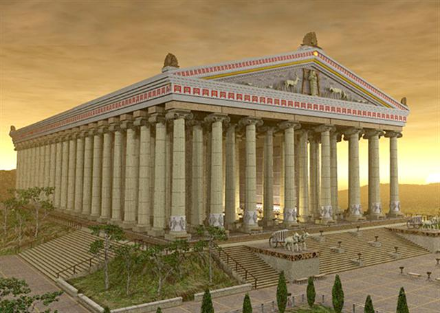
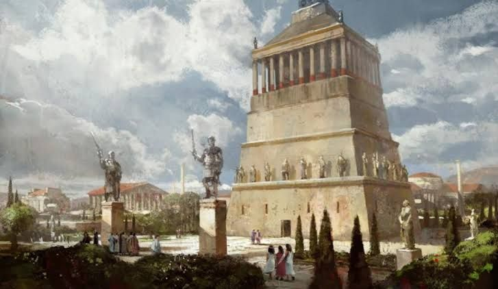
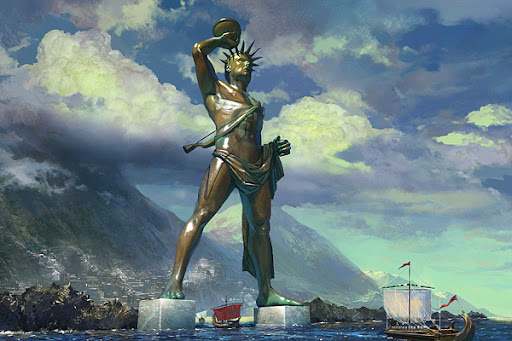
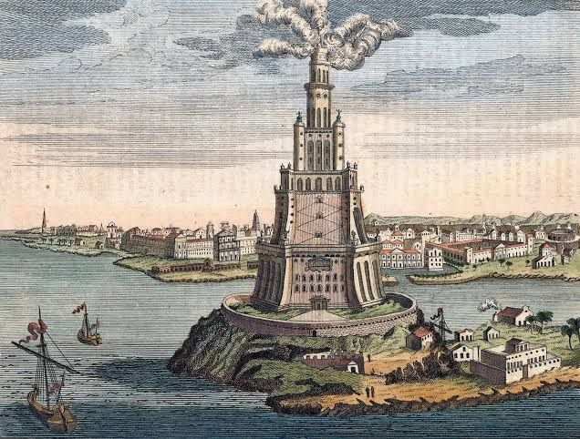

7 สิ่งมหัศจรรย์ของโลก

มหาพีระมิดแห่งกีซา
.png)
สวนลอยแห่งบาบิโลน
.png)
เทวรูปซูสที่โอลิมเปีย
.png)
วิหารอาร์ทิมิส
.png)
สุสานแห่งฮาลิคาร์นัสเซิส
.png)
มหารูปแห่งโรดส์
.png)
ประภาคารฟาโรสแห่งอเล็กซานเดรีย
มหาพีระมิดแห่งกีซา
พีระมิดคูฟูหรือ พีระมิดคีออปส์ นิยมเรียกกันโดยทั่วไปว่า มหาพีระมิดแห่งกีซา (อังกฤษ: The Great Pyramid of Giza) เป็น พีระมิดในประเทศอียิปต์ที่มีความใหญ่โตและเก่าแก่ที่สุดในกลุ่มพีระมิดแห่งกีซา
เชื่อกันว่าสร้างขึ้นในสมัย ฟาโรห์คูฟู (Khufu) แห่ง ราชวงศ์ที่ 4 ซึ่งปกครองอียิปต์โบราณ เมื่อประมาณ 2,600 ปีก่อนคริสตกาล หรือกว่า 4,600 ปีมาแล้ว เพื่อใช้เป็นที่เก็บรักษาพระศพ ไว้รอการกลับมาคืนชีพ ตามความเชื่อของชาวอียิปต์ในยุคนั้น
มหาพีระมิดนี้ได้รับการยกย่องให้เป็นหนึ่งในเจ็ดสิ่งมหัศจรรย์ของโลก และเป็นหนึ่งเดียว ในเจ็ดสิ่งมหัศจรรย์ยุคโบราณ ที่ยังคงอยู่มาจนถึงปัจจุบัน

สวนลอยแห่งบาบิโลน
สวนลอยบาบิโลน (อังกฤษ: Hanging Gardens of Babylon) จัดเป็นหนึ่งในเจ็ดสิ่งมหัศจรรย์ของโลก ตั้งอยู่ริมแม่น้ำยูเฟรติส ประเทศอิรักในปัจจุบัน สร้างโดยพระเจ้าเนบูคัดเนซซาร์ที่ 2 แห่งกรุงบาบิโลเนีย
สร้างให้แก่มเหสีของพระองค์ชื่อพระนางอมีทิสสร้างขึ้นเมื่อ 600 ปีก่อนคริสต์ศักราช
สูงประมาณ 75 ฟุต กินพื้นที่ 400 ตารางฟุต ระเบียงทุกชั้นได้รับการตกแต่งด้วยไม้ดอก ไม้ประดับ ไม้ยืนพุ่มชนิดต่าง ๆ มีระบบชลประทานชักน้ำจากแม่น้ำยูเฟรตีสไปทำเป็นน้ำตกและนำไปเลี้ยงต้นไม้ตลอดปี
สวนลอยบาบิโลนคือสิ่งมหัศจรรย์แห่งเดียวที่ยังไม่ทราบที่ตั้งชัดเจนของมัน และไม่มีเอกสารใดของบาบิโลนที่กล่าวถึงสวนนี้ ทำให้มีการตั้งทฤษฎีต่าง ๆ ที่ตั้งข้อสงสัยถึงการมีอยู่ของมันมากมาย
โดยทฤษฎีที่ได้รับการวิเคราะห์ว่าเป็นไปได้นั้นมีอยู่สามทฤษฎี หนึ่ง; สวนนี้อาจมีอยู่จริงที่บาบิโลน และถูกทำลายด้วยปัจจัยบางอย่างในช่วงเวลาหลังคริสต์ศตวรรษที่หนึ่ง
สอง; สวนลอยบาบิโลนอาจเป็นเพียงสวนในตำนานที่มาจากจินตนาการของนักเขียนชาวกรีกและโรมันเท่านั้น
สาม; สวนนี้แท้จริงแล้วเป็นสวนในตำนานที่ได้รับการอ้างอิงถึงสวนของกษัตริย์เซนนาเชริบของอัสซีเรีย ที่ตั้งอยู่ในกรุงนิเนเวห์ที่ริมแม่น้ำไทกริส ใกล้เมืองโมซูลของประเทศซีเรียในปัจจุบัน

เทวรูปซูสที่โอลิมเปีย
เทวรูปซูสที่โอลิมเปีย (อังกฤษ: Statue of Zeus at Olympia) เป็นเทวรูปของซูส ซึ่งเป็นประธานเทวสภาโอลิมปัส สร้างจากไม้ ประดับด้วยทองคำและงาช้าง ลักษณะประทับนั่ง อยู่บนฐานกว้าง 10 เมตรครึ่ง
ตัวเทวรูปสูงประมาณ 12 เมตร (43 ฟุต) พระหัตถ์ซ้ายถือคทา พระหัตถ์ขวารองรับไนกี้ เทพีแห่งชัยชนะ มีเครื่องประดับด้วยทองคำล้วน
ออกแบบก่อสร้างในศตวรรษที่ 5 ก่อนคริสต์ศักราช โดย ฟิดิแอส ประติมากรชาวเอเธนส์ เทวรูปนี้ประดิษฐานอยู่ในวิหารซูส ที่โอลิมเปีย ประเทศกรีซ
เทวรูปซูสที่โอลิมเปีย จัดเป็นหนึ่งในเจ็ดสิ่งมหัศจรรย์ของโลก ถือเป็นเจ็ดสิ่งมหัศจรรย์ของโลกยุคโบราณ เช่นเดียวกับ ประภาคารฟาโรส หรือวิหารอาร์เทอมีส และถือเป็นสิ่งร่วมสมัยกับวิหารพาร์เธนอน
เทวรูปนี้ถูกทำลายลงเพราะอัคคีภัยในปี ค.ศ. 475 ปัจจุบันนี้ไม่เหลือซากชิ้นส่วนใด ๆ หลงเหลืออยู่เลย

วิหารอาร์ทิมิส
วิหารอาร์ทิมิส (อังกฤษ: Temple of Artemis) หรือ วิหารไดแอนา (อังกฤษ: Temple of Diana) ถูกยกย่องให้เป็น 7 สิ่งมหัศจรรย์ยุคต้น
เชื่อกันว่าสร้างขึ้นเพื่อถวายเทพีอาร์ทิมิส ซึ่งเป็นเทพที่พวกนายพรานเคารพบูชา
มหาวิหารนี้เคยถูกวางเพลิงโดยเฮโรสตราตัสเมื่อ 356 ปีก่อนคริสต์ศักราช เพียงเพื่อต้องการที่จะจารึกชื่อตนเองลงในประวัติสาสตร์
ภายหลังได้รับการซ่อมแซมโดยอเล็กซานเดอร์มหาราช
ปัจจุบันหลงเหลือเพียงซากเสาเท่านั้นหลังจากถูกทำลายโดยพวกกอธที่เข้ามารุกรานเมื่อปีคริสต์ศักราช 262

สุสานแห่งฮาลิคาร์นัสเซิส
สุสานแห่งฮาลิคาร์นัสเซิส หรือ สุสานแห่งโมโซลูส (อังกฤษ: The Mausoleum at Halicarnassus, Tomb of Mausolus, กรีก: Μαυσωλεῖον τῆς Ἁλικαρνασσοῦ)
เป็นสุสานขนาดใหญ่ของกษัตริย์โมโซลูสแห่งลิเชีย ในเอเชียไมเนอร์ จัดเป็นหนึ่งในเจ็ดสิ่งมหัศจรรย์ของโลก เป็นเจ็ดสิ่งมหัศจรรย์ของโลกยุคโบราณ
สุสานแห่งฮาลิคาร์นัสเซิส ตั้งอยู่ที่ฮาลิคาร์นัสเซิส ประเทศตุรกี ในปัจจุบัน สร้างขึ้นโดยราชินี อาเตมีสเซีย หลังการสวรรคตของพระสวามี สร้างขึ้นระหว่าง 353-350 ปีก่อนคริสต์ศักราช
สร้างขึ้นมาจากหินอ่อนในระหว่างปี ค.ศ. 156-190 ในรูปแบบสถาปัตยกรรมกรีกโบราณ มีบันทึกไว้ว่า มีขนาดสูงถึง 140 ฟุต ฐานโดยรอบยาวถึง 460 ฟุต บนยอดสุดเป็นพื้นเหลี่ยมเล็กกว่าฐานล่าง
ได้ปั้นเป็นรูปราชรถและม้า 1 ชุด กำลังวิ่ง และมีกษัตริย์และพระมเหสีประทับยืนอยู่บนราชรถม้า ประกอบด้วยลวดลายสวยงามมาก
สุสานแห่งฮาลิคาร์นัสเซิส พังทลายลงด้วยเหตุแผ่นดินไหวครั้งใหญ่ในคริสต์ศตวรรษที่ 12-13 ปัจจุบันจึงเหลือแต่เพียงซากชิ้นส่วน และชิ้นส่วนบางอย่างถูกเก็บรักษาไว้ที่ บริติช มิวเซียม ในประเทศอังกฤษ

มหารูปแห่งโรดส์
มหารูปแห่งโรดส์ (อังกฤษ: Colossus of Rhodes) เป็นเทวรูปขนาดใหญ่ของเทพฮีลิออส หรือ อพอลโล เป็นหนึ่งในเจ็ดสิ่งมหัศจรรย์ของโลก จัดอยู่ในยุคเจ็ดสิ่งมหัศจรรย์ของโลกยุคโบราณ
ร่วมสมัยกับประภาคารฟาโรสแห่งอเล็กซานเดรีย
มหารูปแห่งโรดส์สร้างมาจากสำริด เป็นเทวรูปของสุริยเทพอพอลโล ซึ่งเป็นหนึ่งในเทวสภาโอลิมปัส มีความสูงประมาณ 108 ฟุต (33 เมตร) มือขวาถือประทีป ประดิษฐานบนฐานทั้งสองข้างของปากอ่าวทางเข้าท่าเรือของเกาะโรดส์
ในทะเลอีเจียน ยืนถ่างขาคร่อมปากอ่าวให้เรือลอดไปมาได้
มหารูปนี้สร้างขึ้นโดย ชาเรสแห่งลินดอส ซึ่งเป็นประติมากรชาวกรีก ในราว 280 ปี ก่อนคริสตกาล ใช้เวลาสร้างประมาณ 12 ปี มีอายุยืนอยู่ได้ประมาณ 60 ปี ก่อนจะพังทลายลงด้วยแผ่นดินไหวครั้งใหญ่ เมื่อ 226 ปี ก่อนคริสตกาล
ซากชิ้นส่วนของมหารูปได้ถูกปล่อยปละละเลยไม่มีใครดูแล จนถึงคริสต์ศตวรรษที่ 10 ซากที่เหลืออยู่ถูกขายให้แก่ชาวเมืองซาราเซน ไปทำอาวุธในการทำสงครามครูเสดจนหมด จนถึงปัจจุบันไม่มีเหลือซากของมหารูปนี้หลงเหลืออยู่แล้ว

ประภาคารฟาโรสแห่งอเล็กซานเดรีย
ประภาคารฟาโรสแห่งอเล็กซานเดรีย หรือ ประภาคารแห่งอเล็กซานเดรีย (อังกฤษ: Pharos of Alexandria, Lighthouse of Alexandria, คำว่าฟาโรสในภาษากรีก (Φάρος) แปลว่าประภาคาร)
เป็นประภาคารโบราณซึ่งจัดให้เป็นหนึ่งในเจ็ดสิ่งมหัศจรรย์ของโลก ตั้งอยู่บนเกาะฟาโรส เมืองอเล็กซานเดรีย ริมฝั่งทะเลเมดิเตอร์เรเนียน สร้างประมาณ 270 ปีก่อนคริสต์ศักราช ในรัชสมัยพระเจ้าปโตเลมีที่ 1 โดยสถาปนิกชื่อ โซสเตรโตส
ตัวประคาภารมีความสูงเท่าใดไม่แน่ชัด แต่อยู่ในระหว่าง 200-600 ฟุต (ขนาดพอ ๆ กับ เทพีเสรีภาพ) สร้างด้วยหินอ่อนแกะสลัก มีตะเกียงขนาดใหญ่บนยอด นักประวัติศาสตร์สันนิษฐานว่าในเวลากลางวันจะปล่อยควัน
ในเวลากลางคืนจะเป็นแสงไฟสว่างที่เห็นได้จากระยะไกล ซึ่งยังไม่ทราบว่าใช้วิธีใดในการจุดไฟและส่องแสง บ้างก็สันนิษฐานว่าใช้กระจกในการส่องแสง บ้างก็เชื่อว่า สามารถส่องแสงได้ถึง 4 ทาง แต่บางส่วนก็เชื่อว่า ส่องแสงได้เพียงแค่ 2 ทางเท่านั้น
ประภาคารฟาโรสแห่งอเล็กซานเดรีย มีอายุอยู่ได้ยาวนานถึง 1,600 ปี จนกระทั่งในประมาณศตวรรษที่ 13-14 เกิดแผ่นดินไหวทำให้ประภาคารพังลงมา
ในปี ค.ศ. 1994 นักโบราณคดีได้ดำน้ำสำรวจบริเวณปากอ่าวอเล็กซานเดรีย พบหลักฐานของสิ่งที่เชื่อว่าเป็นซากชิ้นส่วนของประภาคารฟาโรสแห่งอเล็กซานเดรีย ซึ่งบางส่วนเป็นหินที่หนักถึง 70 ตันและเป็นหนึ่งในเจ็ดสิ่งมหัศจรรย์ของโลกยุคโบราณ
